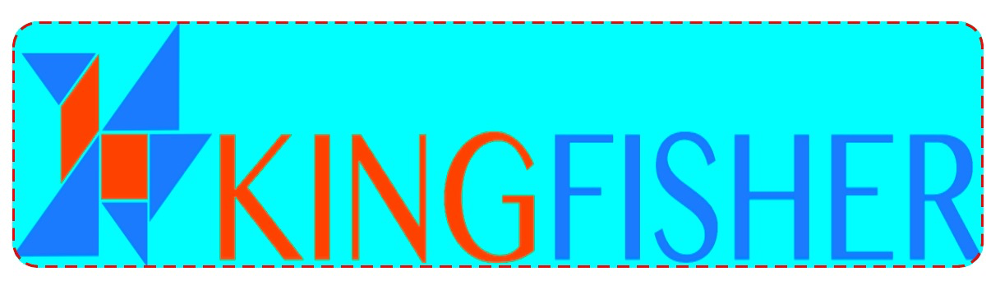

通过 UIBezierPath 与 CAShapeLayer 为 UIView 添加边框 发表于 2017-07-12 | 分类于 swift | 字数统计 372 | 阅读时长 2 通过贝塞尔曲线与 CAShapeLayer 为 View 添加虚线边框,可设置宽度,颜色,圆角等  代码如下: 123456789101112131415161718192021222324252627282930313233/// 为视图添加虚线边框 /// /// - Parameters: /// - view: 要添加边框的视图 /// - size: 视图 size /// - cornerRadius: 视图圆角 默认:10 /// - lineWidth: 边框宽 默认: 1 /// - lineColor: 边框颜色 默认: black /// - lineDashPattern: 边框段长和间距 默认: [5,3] func addBorderLine(view:UIView, size:CGSize, cornerRadius:CGFloat = 10, lineWidth:CGFloat = 1, lineColor:Color? = Color.black, lineDashPattern: [NSNumber] = [5,3]) -> Void { let shaplayer = CAShapeLayer() shaplayer.bounds = CGRect.init(x: 0, y: 0, width: size.width, height: size.height) shaplayer.anchorPoint = CGPoint.init(x: 0, y: 0) shaplayer.fillColor = Color.clear.cgColor shaplayer.strokeColor = lineColor?.cgColor shaplayer.lineWidth = lineWidth shaplayer.lineJoin = "miter" shaplayer.lineDashPattern = [5,3] let path = CGMutablePath() path.move(to: CGPoint.init(x: lineWidth / 2, y: cornerRadius + lineWidth / 2)) path.addArc(center: CGPoint.init(x: cornerRadius + lineWidth / 2, y: cornerRadius + lineWidth / 2), radius: cornerRadius, startAngle: .pi, endAngle: .pi / 2 * 3, clockwise: false) path.addLine(to: CGPoint.init(x: size.width - cornerRadius - lineWidth / 2, y: lineWidth / 2)) path.addArc(center: CGPoint.init(x: size.width - cornerRadius - lineWidth / 2, y: cornerRadius + lineWidth / 2), radius: cornerRadius, startAngle: .pi / 2 * 3, endAngle: .pi * 2, clockwise: false) path.addLine(to: CGPoint.init(x: size.width - lineWidth / 2, y: size.height - cornerRadius - lineWidth / 2)) path.addArc(center: CGPoint.init(x: size.width - cornerRadius - lineWidth / 2, y: size.height - cornerRadius - lineWidth / 2), radius: cornerRadius, startAngle: 0, endAngle: .pi / 2, clockwise: false) path.addLine(to: CGPoint.init(x: cornerRadius + lineWidth / 2, y: size.height - lineWidth / 2)) path.addArc(center: CGPoint.init(x: cornerRadius + lineWidth / 2, y: size.height - cornerRadius - lineWidth / 2), radius: cornerRadius, startAngle: .pi / 2, endAngle: .pi, clockwise: false) path.addLine(to: CGPoint.init(x: lineWidth / 2, y: cornerRadius + lineWidth / 2)) shaplayer.path = path view.layer.addSublayer(shaplayer) view.layer.masksToBounds = true view.layer.cornerRadius = cornerRadius } 坚持原创技术分享，您的支持将鼓励我继续创作！ 赏 微信打赏 支付宝打赏 本文作者： Andy 本文链接： http://andycui.top/2017/07/12/通过-CGMutablePath-为-UIView-添加边框/ 联系作者： AndyCuiYTT@163.com